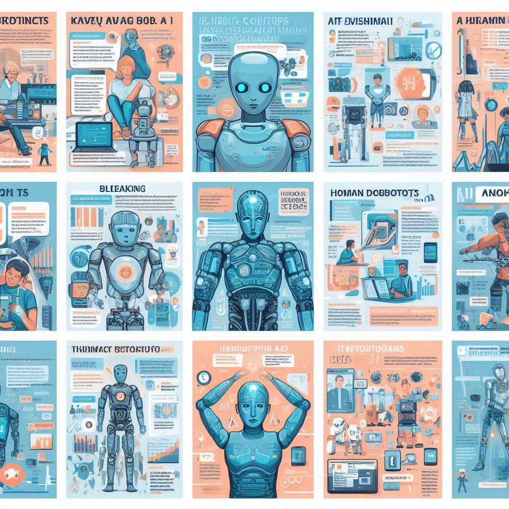

Evolution

An AI generated representation of AI evolution
over the last ten years. (Credit: Bing Image
Creator)
The Beginning
ChatGPT was first introduced by OpenAI in November 2020. It was initially launched as a research preview, allowing users to interact with and provide feedback on the system. The model was made available through the OpenAI API, and users could access it to experiment with natural language conversations and various applications. Since its initial release, OpenAI has continued to refine and update ChatGPT based on user feedback and use cases.
From its initial release, ChatGPT demonstrated the ability to generate code as one of its capabilities. Users found that they could ask ChatGPT to assist with coding-related queries, provide code snippets, or even generate simple programs. However, it's important to note that while ChatGPT can be a helpful tool for generating code, it doesn't have the same level of understanding and context as a human programmer. Users should carefully review and understand the code generated by ChatGPT to ensure its correctness, security, and adherence to best practices. The model's performance in generating code has likely been refined and improved through updates and user feedback since its initial release.
The Present and Future
Since its initial release in 2020, OpenAI has been actively collecting user feedback and making updates to enhance ChatGPT's capabilities, including its ability to write programs. The model's performance in generating code is influenced by the training data it receives and the fine-tuning processes implemented by OpenAI.
Some potential areas of improvement and evolution over time could include:
- Better Understanding of Context: Updates might have aimed at improving the model's understanding of context, allowing it to provide more accurate and relevant code snippets based on user input.
- Reduced Ambiguity: Efforts could have been made to reduce ambiguity in code generation, helping the model produce clearer and more concise code.
- Expanded Language Support: OpenAI might have worked on expanding the range of programming languages that ChatGPT can generate code for, allowing it to be more versatile in assisting with a broader spectrum of programming tasks.
- Handling Complex Scenarios: Improvements might have been made to enable ChatGPT to handle more complex programming scenarios and requirements.
- Addressing Limitations: OpenAI likely addressed some of the limitations and challenges reported by users, refining the model to provide a more useful and reliable experience when it comes to generating code.